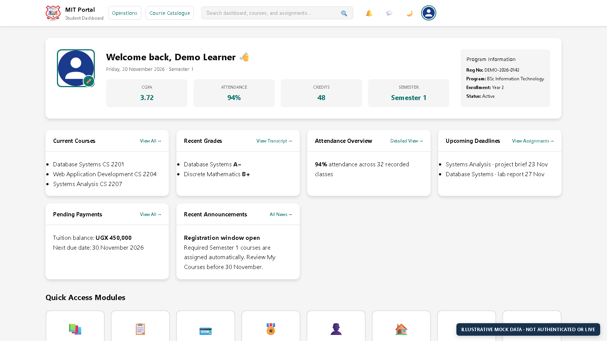
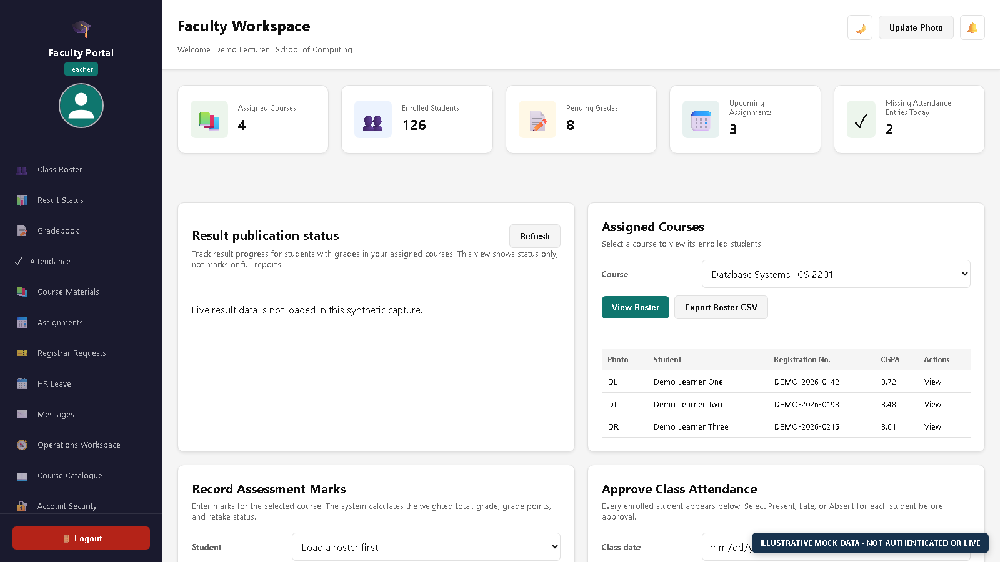
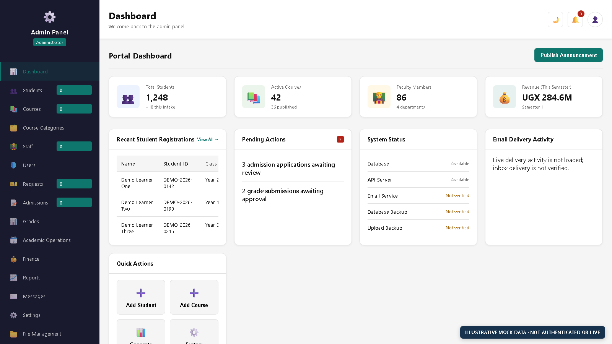

Makerere Institute of Technology
Makerere Institute of Technology
Five-minute system overview
Student Information System
One connected academic journey - from application and enrolment to teaching, results, and student services.
Admissions
Academics
Student services
01 · The student lifecycle
One record. A clear academic journey.
1
Apply
Applicant submits contact details and configured documents.
2
Review
Admissions staff verify requirements and record a decision.
3
Enrol
Accepted applicants receive a student record and programme placement.
4
Assign
Eligible students receive required courses in open terms.
5
Teach
Instructors manage rosters, attendance, and assessments.
6
Release
Authorized staff approve and publish results for students.
Academic control: course assignment follows approved curriculum, available sections, and instructors already assigned to courses. Progression recommendations do not advance a student without Registrar approval.
Presenter cue: Walk from applicant intake to the student seeing approved academic outcomes.
02 · Role-based workflows
Each user sees the work they own.
S
Student
- View courses and timetable
- See published results and attendance
- Manage profile, documents, and service requests
I
Instructor
- Work with assigned course rosters
- Record assessment marks and attendance
- Manage assignments and course materials
R
Registrar / Admin
- Review admissions and academic records
- Manage terms, curricula, and sections
- Review and publish approved results
F
Finance
- Manage student charges and due dates
- Approve new charges before activation
- Review balances and payment workflows
Presenter cue: Emphasize that the system supports shared workflows while preserving role responsibility.
03 · Practical automation
Less repetitive work. Decisions stay accountable.
01 Required course assignment
Triggered by enrolment, an open registration window, or an approved semester update. Missing sections, capacity, holds, and other exceptions remain visible for staff review.
02 One active session per user
A new sign-in invalidates the previous session. Users can also revoke sessions from account security controls.
03 Reminders and delivery tracking
Fee/grade reminders run at 09:00; attendance-risk alerts at 09:30 in the configured time zone (Nairobi by default). Failed notification email retries after 1, 5, and 30 minutes.
04 Controlled changes
Admission document requirements are configurable. New student charges remain drafts until Finance approval. Semester progression remains Registrar-controlled.
An accepted email request is not proof of inbox delivery; staff should review delivery status and test with approved inboxes.
Presenter cue: Explain that automation handles routine triggers while exceptions and approvals stay with staff.
04 · Interface preview
Three clear workspaces. One SIS.

Student Courses · results · services

Instructor Roster · assessment · attendance

Administrator Oversight · reviews · operations
Illustrative screenshots use synthetic data; they are not authenticated or live account captures.
Presenter cue: Point to the different tasks each workspace makes visible without showing real personal data.
05 · Outcomes and next steps
Ready to demonstrate. Ready for careful acceptance.
What the SIS enables
- A traceable student journey from application to academic progress
- Fewer manual course-assignment and reminder tasks
- Clear ownership for teaching, review, finance, and student services
- Student access to results only after authorized publication
Before real-data use
- Approve curricula, sections, instructors, grading, and progression rules
- Test student, instructor, Registrar, and Finance workflows with approved accounts
- Verify email delivery, database migration, backups, and durable files
Current boundary: the 20 November test release passed CI and public health/route checks; authenticated workflow and target-data acceptance remain open. This is not production approval.
Close: The SIS is designed to reduce handoffs; institutional policy and target-environment acceptance complete the job.